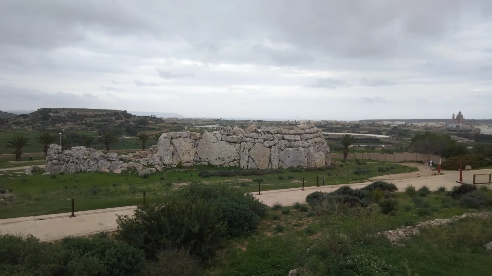

The square, older sectors and outer residential roads differ. Parking, gradient, pavement continuity and frontage belong to the exact address.

IX-XAGĦRA · GOZOPlateau village.
Plateau village.
Layered history.
Village square, residential streets and major heritage sites share one locality without becoming one promise. The exact block still decides access, outlook and everyday rhythm.
ONE GOZO LOCALITY
Start with the right Xagħra.
Official records place Xagħra in the Gozo Region. Ix-Xgħajra is a separate locality on Malta. Ir-Rabat, Nadur, Marsalforn and Ramla also keep their own identities, addresses and maps.
Ġgantija and Ta’ Kola establish place character. Neither proves admission, a continuous route or a landmark view from every home.
Similar spelling cannot merge the Gozo hill village with the separate coastal locality on Malta.
Prehistory on the Xagħra plateau.
Heritage Malta describes two Late Neolithic structures at Ġgantija, while UNESCO provides the formal World Heritage context. Live access, facilities and tickets belong to the current operator record.
Heritage Malta live site page ↗More than an attraction list.
The Local Council distinguishes historic sectors within Xagħra. This edition keeps the square, streets and daily services legible instead of turning separate sites into a single invented walk.
Xagħra Local Council ↗EVERYDAY CHECKS
Concrete anchors, live details.
These current council, operator and transport sources establish practical context. They are not rankings and do not claim that any destination is nearest to a property. Recheck status, hours and the permitted route directly.
Local Council
The council publishes its office on 8th September Avenue. Current counter services and access belong on the official page.
Council contact ↗Galea Supermarket
The operator currently identifies collection from Xagħra and Marsalforn outlets. Verify the Xagħra location and live hours before travelling.
Galea operator page ↗Current bus directory
Malta Public Transport currently lists Route 307 under Xagħra. This preview freezes no frequency, departure or stop-to-property time.
Live routes and timetables ↗Ta’ Kola Windmill
Heritage Malta operates Ta’ Kola. Check its live listing for current opening, facilities and access rather than relying on an old guide.
Heritage Malta sites ↗FOOD WITHOUT A RANKING
Two sourced examples, no “best of” claim.
Operator pages can anchor a viewing-day shortlist. They do not establish proximity to every home, and current status should be checked before travelling.
Coronation Bistro Bar
The operator places Coronation in Victory Square, Xagħra. Use its live page for current address, status and booking information.
Coronation operator page ↗Ta’ Frenċ
The operator identifies Daħla ta’ Għajn Damma, Xagħra. This is a sourced example, not an endorsement or repetition of awards and rankings.
Ta’ Frenċ operator page ↗No invented shortcut.
This edition draws no locality boundary, property pin, straight-line walk, bus schedule, car-traffic estimate or taxi price. Visit Gozo publishes an official Ramla walk, but it is not a property route and its geometry and safety context must remain attached to the source document.
Open the locality overview only when you need it.
The map frames Xagħra and surrounding place labels for orientation. It deliberately draws no boundary, route, distance, travel time or listing location and loads from OpenStreetMap only after your click.
Address Registrar · Local Government Division · Xagħra Local Council · Xgħajra Local Council · Visit Gozo · Heritage Malta · UNESCO · Malta Public Transport · Galea Supermarket · Coronation · Ta’ Frenċ
No ranking, fixed opening hours, property-specific distance, guaranteed view, parking claim, accessibility promise or locality-wide journey time is implied.